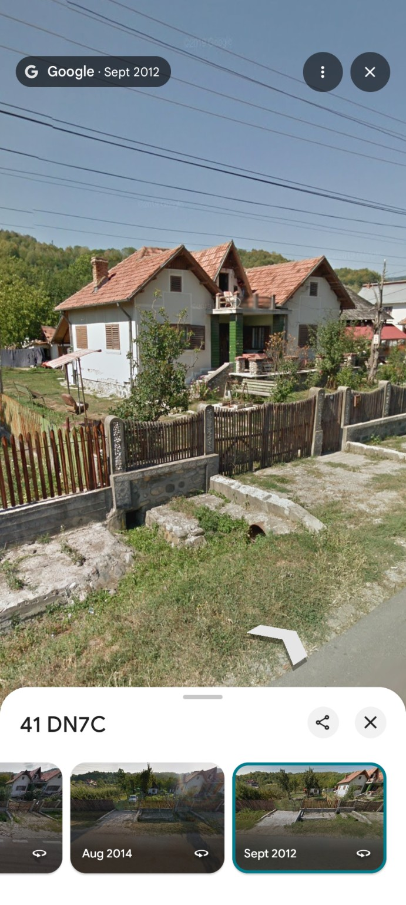
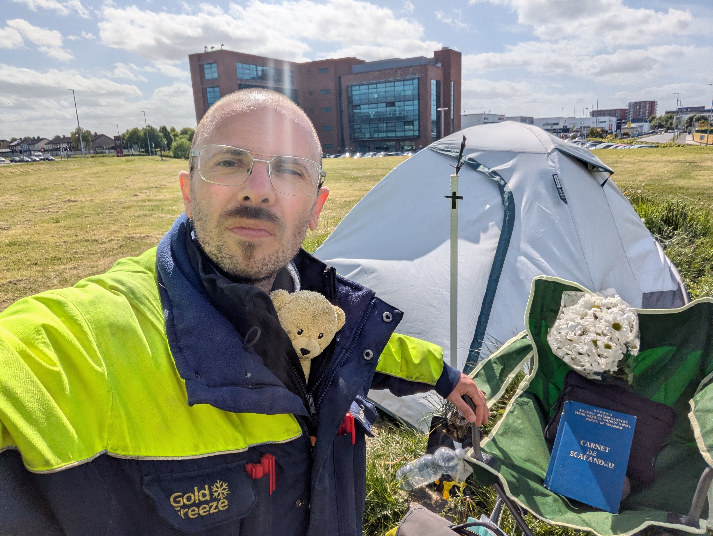
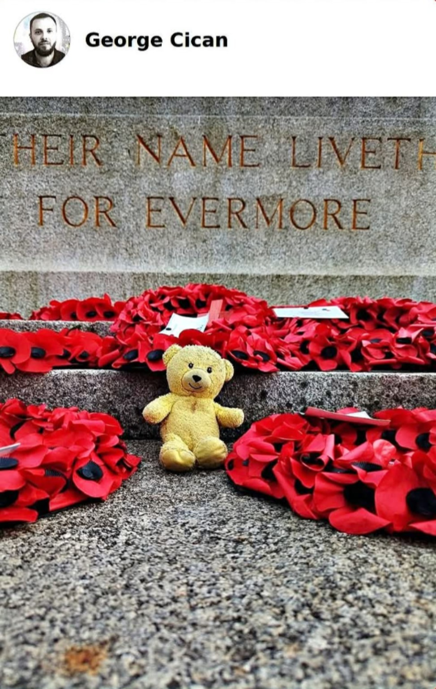
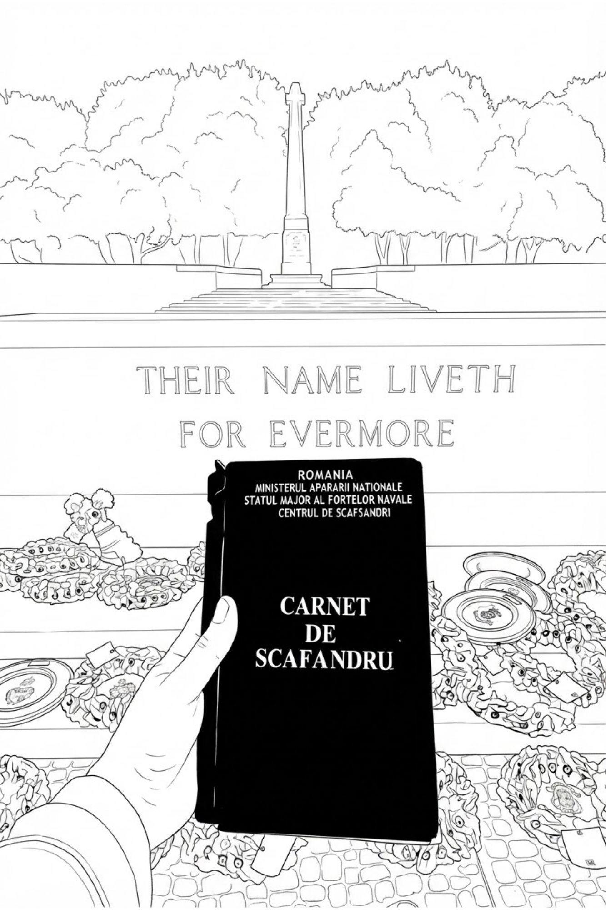
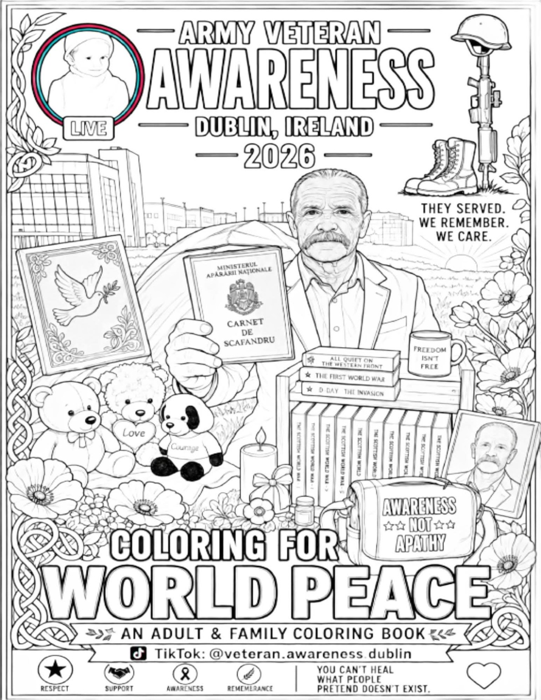
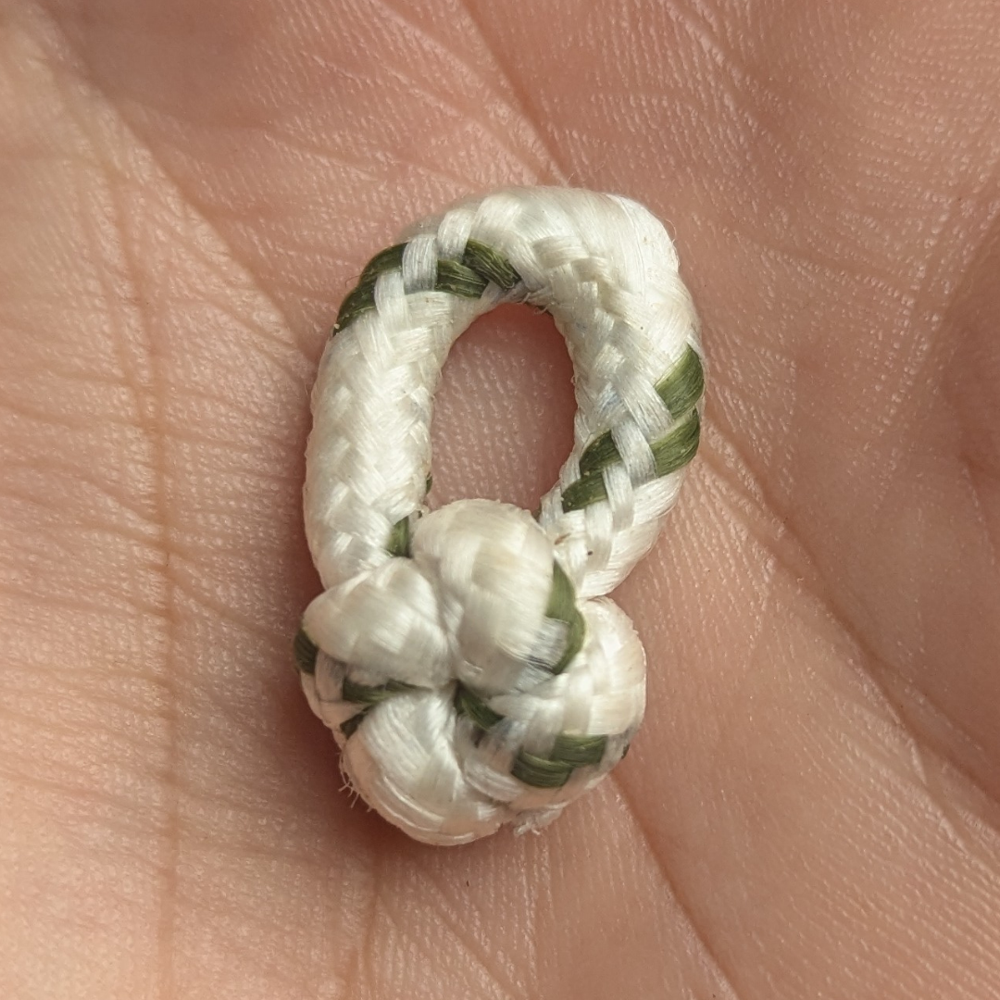

Romanian Roots
A view from Romania connected with the places and roots behind the personal story of this project.

A personal remembrance project by Cican George Alin, created in memory of his grandfather, Nicolae Urluescu, a Romanian World War II veteran.
Enter the Memorial
My grandfather.
A Romanian World War II veteran.
His memory is the beginning of Veteran Awareness Dublin 2026.
This project is my personal way of carrying his memory forward and honoring veterans through remembrance, creativity and peace.

A moment of remembrance in Dublin, Ireland — connecting personal memory with a wider culture of remembrance.
I am the grandson of Nicolae Urluescu.
I live in Dublin, Ireland, where I created Veteran Awareness Dublin 2026 as a personal commemoration of my grandfather.
My life is connected with the outdoors. I camp, explore and spend time in nature. I am also a Navy diver.
Through this project, I carry my grandfather's memory forward in my own way.

A view from Romania connected with the places and roots behind the personal story of this project.

A coloring illustration connecting remembrance with a personal connection to Romanian naval diving.

The first coloring book created for Veteran Awareness Dublin 2026.
Coloring for World Peace.
View / Buy BookA future coloring book created from real photographs of the Dublin War Memorial Gardens.
More remembrance. More places. More stories.
A future collection of coloring pages inspired by a place of remembrance in Dublin.

The CICAN knot is a handmade commemorative symbol created as part of this project.
A small object carrying a larger idea: connection, remembrance and something deliberately tied rather than forgotten.
Not Given. Not Bought. Earned.
A coloring book built around veterans, remembrance and a message of peace.
The coloring work turns remembrance into something people can hold, share and participate in.
A small contribution made in respect and honor of veterans.
Every book can carry more than a picture. It can carry remembrance.
Created in Dublin in memory of Nicolae Urluescu and in honor of veterans.